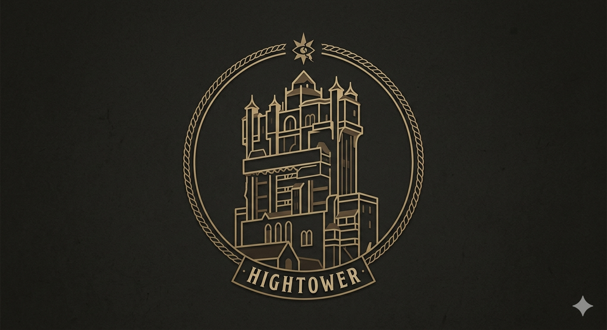

Hotel Hightower

I. 1899年の失踪劇
1912年のアメリカ・ニューヨーク。人々が「恐怖のホテル（タワー・オブ・テラー）」と呼び畏怖する壮麗な廃墟「ホテル・ハイタワー」。現在、この建物はニューヨーク市保存協会による見学ツアーが催され、一般に公開されていますが、その静寂の裏には、1899年12月31日の大晦日に起きたオーナー失踪事件が眠っています。
創設者のハリソン・ハイタワー三世は、富と名声、誠実さとは無縁のあくなき収集欲の象徴でした。彼は世界中を巡って美術品や文化遺産を半ば「略奪」に近い形で集め、それを誇示するためにこの巨大なホテルを建設したのです。その歪んだ自己顕示欲は、ネオ・ゴシック、ムガル（イスラム風）、ビザンティンといった世界の多様な建築様式を無理やり一つの塔に融合させた、美しくも奇怪なホテルの外観そのものに現れています。
| Year | Event |
|---|---|
| 1835年 | ハリソン・ハイタワー三世 誕生。 |
| 1886年 | 父の大邸宅を継承。世界規模の略奪探検と収集を本格化。 |
| 1892年 | 自らの富の象徴である「ホテル・ハイタワー」を開業。 |
| 1899年 | コンゴ川流域のムトゥンドゥ族から「シリキ・ウトゥンドゥ」を強奪。 |
| 1899年12月31日 | ホテル内での記者会見直後、エレベーター落下事故により謎の失踪。 |
| 1912年 | ニューヨーク市保存協会により、ホテル内の見学ツアーが開始される。 |
II. 呪いの偶像と8つの掟
この悲劇を紐解く最大のカギが、アフリカのムトゥンドゥ族が崇拝していた精霊の偶像「シリキ・ウトゥンドゥ」です。これは単なる木彫りの置物ではなく、内部には「古代の呪術師の実際の遺骨」が仕込まれ、全身に無数の金属片が打ち込まれた恐るべき呪物でした。偶像には、扱う者が絶対に破ってはならない「8つの掟」が存在しました。
シリキ・ウトゥンドゥ：8つの掟
1. 崇拝すること。
2. 燃やさないこと。
3. 閉ざされた場所にしまわないこと。
4. おろそかにしないこと。
5. 馬鹿にしないこと。
6. 他人に渡さないこと。
7. 放置しないこと。
8. 恐れること。
傲慢の極みにあったハイタワー三世は、木箱に閉じ込め、公の記者会見で呪いを嘲笑し、エレベーター内では吸っていた葉巻の火をその頭に押し付けるなど、あらゆる掟を徹底的に踏みにじりました。実は、ハイタワーの探検隊がムトゥンドゥ族を襲撃した際、原住民たちは突然戦闘をやめ、あっさりと偶像を明け渡したと言われています。それは降伏ではなく、「掟を破ったハイタワーが、精霊の手によって確実に破滅する」ことを彼らが確信していたからでした。
深夜0時、エレベーターを襲った不気味な緑色の雷撃。生存者の証言によれば、ハイタワー三世はただ落下したのではなく、「シリキ・ウトゥンドゥの放つ緑の光に引きずり込まれるようにして消えた」とも、「自室から大広間（ボールルーム）へ吹き飛ばされた」とも言われています。残されていたのは、彼の被っていたトルコ風の帽子だけでした。
👁️ 不吉なる数秘術「13」の連鎖
このホテルには、不吉な数字「13」の奇妙な連鎖が刻まれています。
・事件からツアー開始までの空白期間：**13年**（1899年〜1912年）
・ハイタワー失踪の総人数および関係者の数：**13人**
・秘密の書斎へ続く階段の段数：**13段**
・部屋に遺された呪術道具や重要書類の数：**13個**
これらは、偶然ではなくすべて呪いの仕掛けの一部なのです。
III. 秘密結社「S.E.A.」と影の忠臣
ホテル・ハイタワーの物語は、単体のオカルト事件に留まりません。ハイタワー三世は、ディズニーシー全体の海洋探検史を繋ぐ、世界規模の探検家＆冒険家協会「S.E.A. (Society of Explorers and Adventurers)」のメンバーでした。1538年の大航海時代にコロンブスやダ・ヴィンチらによって創設されたこの歴史ある学会において、ハイタワー三世は19世紀の「再興期」を支えた主要メンバーの一人として名を連ねています。彼のあくなき強奪行為は、この組織の絶大な特権を利用して行われていました。
ソアリンの「カメリア・ファルコ」や、香港の「ヘンリー・ミスティック卿」とも深い繋がりがあり、ミスティック卿の邸宅には、彼とハイタワー三世がシリキ・ウトゥンドゥを抱えて微笑む不気味な絵画が今も飾られています。
執事スメルディングの「異常な忠誠心」
ハイタワーに仕えた従順な執事「アーチボルト・スメルディング」。20ヶ国語以上を操る超エリートの彼は、ホテルのいたる所にその姿を残しています。
・**ロビー正面の巨大壁画：** 右下で熱心に略奪品の目録を記録する姿。
・**アフリカ探検の壁画：** 迫り来る原住民を足止めするため、吊り橋を大きなナイフで容赦なく切り落とそうとする冷酷無比な姿。
・**ラジャのプール（現メモラビリア）の写真：** プールサイドで、水着を着用しているにも関わらず、黒い帽子（ボーラーハット）を被ったまま直立不動している異常な姿。
彼は主の失踪後、自らも姿を消したとされていましたが、実は偽名を使ってライバルの娘ベアトリスに接触。ホテルの解体を防ぐために彼女を操り、「見学ツアー（タワー・オブ・テラー）」を裏で仕組んだ真の黒幕なのです。
IV. S.S.コロンビア号との確執
ホテルのすぐ隣、アメリカンウォーターフロントの港に港々しく停泊する巨大客船「S.S.コロンビア号」。この船を所有するU.S.スチームシップカンパニーのオーナーである「コーネリアス・エンディコット三世」は、ハイタワー三世の親の代からの終生のライバルでした。
海運で近代都市の「光」と「商業的進歩」を象徴するエンディコットと、私的な収集欲と古代への「闇」を体現したホテル・ハイタワー。二つの巨大な富豪文化は、同じ都市の中で常に激しいせめぎ合いを見せていました。ハイタワー三世の失踪後、コーネリアスはホテルを解体し「エンディコット・グランドホテル」を建てようと画策します。しかし、ハイタワーの探検に密かに憧れていた娘「ベアトリス」が、父の開発計画に反発して「保存協会」を設立したことで、ホテルは守られることになりました。
📦 ロストリバーデルタ「レイジングスピリッツ」の物証
ハイタワーの魔の手は、はるか南米の発掘現場にも及んでいました。レイジングスピリッツの遺跡発掘現場には、今も積み残された木箱が散乱しています。その側面には、はっきりと**「HOTEL HIGHTOWER」**の文字が刻まれています。これは、1912年のアメリカンウォーターフロントと、南米の古代遺跡の時間が、「ハイタワーの略奪と物資の輸送」という線でリアルに繋がっている決定的な証拠なのです。
V. 独自の神話学（アメリカ版との差異）
世界中のディズニーに存在する「タワー・オブ・テラー」ですが、日本の東京ディズニーシーのものは、世界でも類を見ない完全オリジナルな世界観を誇ります。
海外版（フロリダやパリなど）は、アメリカの伝説的なSF番組『トワイライト・ゾーン』をライセンスに持ち、1939年のハリウッドの超常現象ホテルを描いています。しかし、日本への導入にあたり、この古典TV番組が日本の若者層に馴染みが薄いこと、安定したディズニーシー全体のコンセプトを崩さないために、オリエンタルランドとWDI（ウォルト・ディズニー・イマジニアリング）はライセンスを外し、総工費約210億円を投じてこの地に馴染む独自の歴史神話を構築しました。
「都市伝説」「ギルド時代の秘密結社」「一族の利権争い」を組み込んだ東京版は、単なるホラーを超えた、極めて完成度の高い「歴史ドキュメンタリー」としての廃墟美を完成させたのです。アトラクション専用に書き下ろされた重厚なオーケストラと不気味なパイプオルガン、聖歌隊のコーラスは、乗る前から私たちを「ハイタワー三世の歪んだ世界」へと引きずり込んでいきます。